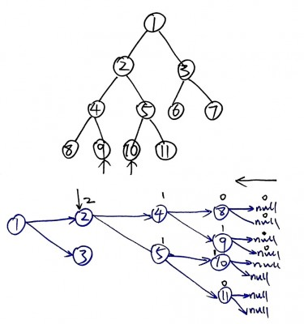

LeetCode – Lowest Common Ancestor of a Binary Tree (Java)
Given a binary tree, find the lowest common ancestor (LCA) of two given nodes in the tree.
Java Solution 1
public TreeNode lowestCommonAncestor(TreeNode root, TreeNode p, TreeNode q) { if(root==null) return null; if(root==p || root==q) return root; TreeNode l = lowestCommonAncestor(root.left, p, q); TreeNode r = lowestCommonAncestor(root.right, p, q); if(l!=null&&r!=null){ return root; }else if(l==null&&r==null){ return null; }else{ return l==null?r:l; } } |
To calculate time complexity, we know that f(n)=2*f(n-1)=2*2*f(n-2)=2^(logn), so time=O(n).
Java Solution 2 - deprecated
Please use the following diagram to walk through the solution.

Since each node is visited in the worst case, time complexity is O(n).
class Entity{ public int count; public TreeNode node; public Entity(int count, TreeNode node){ this.count = count; this.node = node; } } public class Solution { public TreeNode lowestCommonAncestor(TreeNode root, TreeNode p, TreeNode q) { return lcaHelper(root, p, q).node; } public Entity lcaHelper(TreeNode root, TreeNode p, TreeNode q){ if(root == null) return new Entity(0, null); Entity left = lcaHelper(root.left, p, q); if(left.count==2) return left; Entity right = lcaHelper(root.right,p,q); if(right.count==2) return right; int numTotal = left.count + right.count; if(root== p || root == q){ numTotal++; } return new Entity(numTotal, root); } } |
<pre><code> String foo = "bar"; </code></pre>
-
nidhi pitroda
-
Hooman
-
Cherry Zhao
-
Ameya Naik
-
w4nderlust
-
ryanlr
-
Ankit Shah
-
Sirius